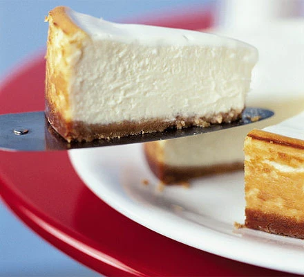

New York Cheesecake

Description
This authentic creamy dessert will add a taste of New York to any dining table. Our American-style baked cheesecake recipe makes an easy family dessert.
Ingredients
For the crust
- 85g butter
- 140g digestive biscuits
- 1 tbsp sugar
For the filling
- 900g Philadelphia cheese
- 250g caster sugar
- 3 tbsp plain flour
- 1 tsp vanilla extract
- 1 lemon
- 3 eggs
For the topping
- 1 carton sour cream
- 1 tbsp caster sugar
- lemon juice
Steps
- Position an oven shelf in the middle of the oven. Heat the oven to 180C/ 160C fan/ gas 4.
- Line the base of a 23cm springform cake tin by putting a square piece of parchment paper or foil on top of the tin base and then clipping the side on so the paper or foil is trapped and any excess sticks out of the bottom.
- For the crust, melt 85g butter in a medium pan. Stir in 140g digestive biscuit crumbs and 1 tbsp golden caster or granulated sugar so the mixture is evenly moistened.
- Press the mixture into the bottom of the pan and bake for 10 minutes. Cool on a wire rack while preparing the filling. For the filling, increase the oven temperature to fan 220C/ 200C fan/ gas 7. In a table top mixer fitted with the paddle attachment, beat 900g full-fat soft cheese at medium-low speed until creamy, about 2 minutes.
- With the mixer on low, gradually add 250g golden caster sugar, then 3 tbsp plain flour and a pinch of salt, scraping down the sides of the bowl and the paddle twice. Swap the paddle attachment for the whisk. Continue by adding 1½ tsp vanilla extract, 2 tsp lemon zest and 1½ tsp lemon juice. Whisk in 3 large eggs and 1 yolk, one at a time, scraping the bowl and whisk at least twice.
- Stir a 284ml carton of soured cream until smooth, then measure 200ml (just over ¾ of the carton). Continue on low speed as you add the measured soured cream (reserve the rest). Whisk to blend, but don't over-beat. The batter should be smooth, light and somewhat airy.